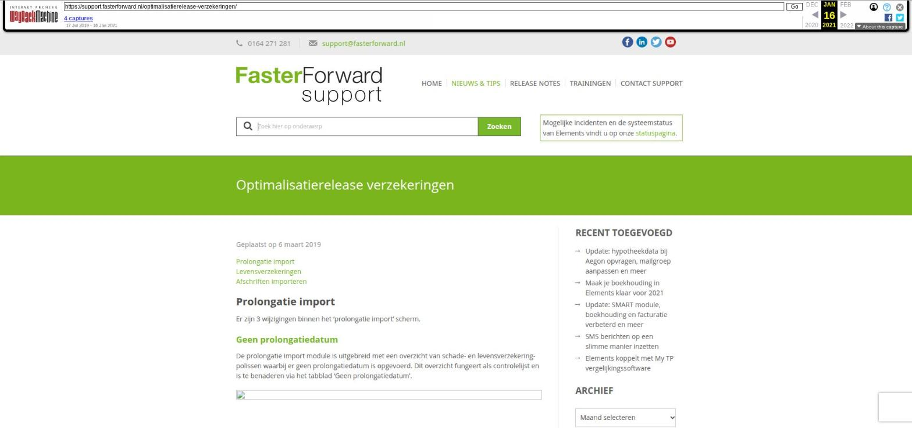

Optimalisatierelease verzekeringen

Tekstinhoud
Geplaatst op 6 maart 2019
Prolongatie import
Levensverzekeringen
Afschriften importeren
Prolongatie import
Er zijn 3 wijzigingen binnen het ‘prolongatie import’ scherm.
Geen prolongatiedatum
De prolongatie import module is uitgebreid met een overzicht van schade- en levensverzekering-polissen waarbij er geen prolongatiedatum is opgevoerd. Dit overzicht fungeert als controlelijst en is te benaderen via het tabblad ‘Geen prolongatiedatum’.
Naamswijziging ‘Provisie verschil’
Het tabblad ‘Provisie verschil’ is hernoemd naar ‘Verschillen’.
Premieafwijkingen
Vanaf heden worden, indien ingericht, premie afwijkingen geïdentificeerd bij de verwerking van ADN posten. Een post die buiten de ingerichte premiemarges valt, wordt zichtbaar in het ‘Verschillen’ overzicht. Premiemarges kunnen zowel procentueel als absoluut worden ingericht vanuit het tabblad ‘Instellingen’.
Afwijkende incassowijze
Vanaf heden wordt bij de verwerking van ADN posten gecontroleerd of er een afwijking in de incassowijze aanwezig is.
Indien de ADN post is gekenmerkt als tussenpersoon incasso en in Elements is deze anders opgevoerd, dan zal de ADN post gemarkeerd worden als afwijkend.
Indien de ADN post is gekenmerkt als niet-tussenpersoon incasso en in Elements is deze wel als tussenpersoon incasso opgevoerd, dan zal de ADN post gemarkeerd worden als afwijkend.
De gemarkeerde ADN posten zijn te herkennen aan het rode rekenmachine icoon. Deze ADN posten zijn zichtbaar in het ‘Verschillen’ overzicht.
Levensverzekering
Uitbreiding velden
In de productkaart van het type levensverzekering zijn de velden uitgebreid.
Boven de opgevoerde verzekeringsdelen is het kopje ‘Premie’ toegevoegd, deze worden gevuld vanuit ADN berichten of kunnen handmatig worden ingevuld.
In het verzekeringsdeel is het kopje ‘Premie’ toegevoegd en zijn de velden onder het kopje ‘Looptijd’ uitgebreid:
Afschriften importeren
Herkenning transacties
Het mechanisme voor het herkennen van transacties is uitgebreid. Het was al mogelijk om te matchen op basis van toewijzingsregels en op openstaand bedrag. Daarnaast wordt er vanaf nu ook gematched op:
Betalingskenmerk *
IBAN rekeningnummer
Niet-IBAN rekeningnummer
In de module is per transactie zichtbaar waarop matching heeft plaatsgevonden.
* Het betalingskenmerk kan middels de tag [factuur->betalingskenmerk] worden opgehaald.
Visuele weergave
Het scherm ‘Bankafschrift importeren’ heeft een nieuw uiterlijk (zie afbeelding).
Daarnaast is het transactieoverzicht uitgebreid met een drietal kolommen:
Type waarop is gematched. Dit kan op basis van één van de 5 mogelijkheden (zie ook legende rechtsbovenin);
Relatienaam van de gekoppelde transactie;
Of er een openstaande post gekoppeld is aan de transactie.
Categorie: Release